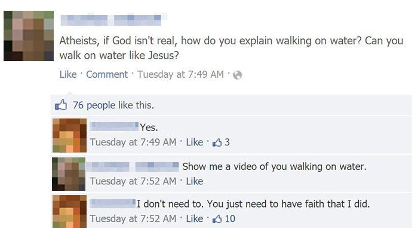

1F: Debunking Faith And Why Assuming God Is Not A Legitimate Axiom
Table of Contents
- 1. Why It’s Not Possible To Prove Faith By Performative Contradiction, Plus Some Other Text Debunking It
- 2. Debunking Faith (Written Differently, But Reaches The Same Conclusion)
- 3. It Is Necessary To Use Reason To Define Faith, But Unnecessary To Use Faith To Define Reason
- 4. The Problems With Adding God As An Axiom
- 5. All The Different Ways / Puzzle Pieces For Proving That The Reasoning Process Is The Only Source Of Sensory Knowledge
1. Why It’s Not Possible To Prove Faith By Performative Contradiction, Plus Some Other Text Debunking It
The whole point in the proof of reason by performative contradiction is to prove that reason itself is valid.
However, the proof by performative contradiction assumes that reason is valid since it attempts to use reason to invalidate reason itself.
If reason was hypothetically invalid, then the entire proof would fall apart as a circular reasoning fallacy because it would be assuming a false premise.
Does this mean that we have to accept “Reason is valid” as an axiom? If so, then that would defeat the purpose of doing the proof of reason by performative contradiction in the first place.
Moreover, if reason can be justified by performative contradiction, then wouldn’t it follow that faith can also be similarly validated by having faith that faith is not valid?
We already know that faith is never a valid source of knowledge under any circumstances, so it has to be invalid and erroneous to prove faith by performative contradiction. Let’s define ’faith’ under one definition and try to find the error:
- Faith is defined as having confidence or trust in a belief (the confidence is sufficiently high enough or higher such that the believer believes the belief). So we can break down the performative contradiction using the definition ’faith’:
- Proposition I: I have high confidence that [having high confidence in believing something] is not a valid source of knowledge.
- Conclusion I: It is valid to have high confidence in something because having high confidence that high confidence is false is a performative contradiction, as shown by Proposition I.
If the definition of ’faith’ is simply “high confidence” (in which case “faith” and “confidence” would be exact synonyms), then at best, the only thing that this performative contradiction accomplishes is that it debunks skepticism since skepticism insists that we should not have confidence, let alone high confidence, in anything. There are other ways to debunk skepticism that are easier to read and understand since those definitions have simpler semantics, however it might be more desirable to include this statement in the foundationalist framework instead since the semantics can be more nuanced between ’confidence’ and ’high confidence’, compared to just understanding that “true statements exist”.
Since ’faith’ is synonymous with ’confidence’ under this particular definition, there would be exactly two possible scenarios whenever someone claims to have faith in something that is false/bogus/contradictory/etc:
- The believer does not have evidence or reasoning to support their beliefs, in which case their claim would be dismissed by Hitchen’s Razor and/or Appeal to Ignorance since the burden of proof fall on the person making the claim by faith (confidence).
- The believer does have evidence or reasoning to support their beliefs, in which case their belief and their confidence in the belief would be ultimately justified by reason, not faith.
Since there are only two possible options, and the only way the believer’s claim could have any chance at being valid is if the claim is ultimately justified by some evidence or reasoning, this reaffirms that reason is the only true source of knowledge.
On the other hand, if we are: 1. using a definition of ’faith’ that establishes that ’faith’ does not use reason or evidence, and we have already established that 2. reason is valid, then we can reject ’faith’ on the simple basis that it doesn’t use reason. This would mean that we are done. It also means that even if someone did attempt to prove that ’faith’ (defined as confident belief(s) without reason or evidence) is a valid source of knowledge by performative contradiction, their chain of reasoning would break down the same way a circular reasoning fallacy falls apart when all the premises are set to false.
We have thus shown that it is fallacious to justify faith by performative contradiction. The main purpose in doing this was to show that proving the validity of reason by performative contradiction would not make faith valid in the same manner.
So regardless of which definition of ’faith’ is chosen, whether that be the definition favored by religious people (confidence or trust in a belief) or the definition favored by atheists and religious skeptics (belief without evidence), faith in of itself is not a valid source of knowledge if it is the case that reason is a valid source of knowledge.
2. Debunking Faith (Written Differently, But Reaches The Same Conclusion)
- Confidence in X
- The belief that X is likely to be true.
- (Blind) Faith
- High confidence in a belief, based on a perceived degree of warrant without using reason; the suspension of skepticism without using reason.
We shall evaluate the definition of faith. One of the hardest parts about answering this question is figuring out how to differentiate different definitions and define what I am talking about.
To make a distinction between ’confidence’ and ’faith’, the definition of ’faith’ will have to entail believing in something without using reason. ’Confidence in X’ may entail believing in X, with or without reason.
In order to perceive a belief as having a high degree of warrant in the first place, that warrant would have to be assigned by the mind’s reasoning mechanism based on the beliefs that the mind believes is true before it determines the belief in question of being deserving of faith.
When people are using faith in a religious or ideological context, many of them will entirely skip using the reasoning mechanism all together by believing in the belief because they want it to be true, even if it actually isn’t.
And then there are religious people who do explicitly say that they are using the reasoning process to believe in their religion, but they will often use ’faith’ as part of their belief. Religious people often use the word ’faith’ when they are discussing religion because their religions include the belief that people who don’t believe in God(s) will go to Hell. Hence, they need a word that they will productively use a lot in order to express this belief of theirs, and also as a means to express their worship of the deity or deities. But if their ’faith’ is based on fallacious reasoning rather than merely believing in the deity because they want/wish the beliefs were true, then that ’faith’ of theirs is not ’faith’ in the traditional sense, the sense that is often contrasted against reason and thus doesn’t use reason itself.
If faith is defined similarly to the definition above, but without the prepositional phrase “without using reason”, then someone who has faith in X under that definition is actually using the reasoning process to designate high confidence based on warrant, since warranting something of high confidence requires using evidence and the reasoning process.
On the other hand, if faith is defined exactly as the definition above, including with the prepositional phrase “without using reason”, then someone who has faith in X under this definition is truly not using any reason to believe in X (reason is completely absent from their justification for X). Their justification of X is thus invalid because existence precedes consciousness, and wanting something to be true does not make it true.

3. It Is Necessary To Use Reason To Define Faith, But Unnecessary To Use Faith To Define Reason
We had to spend some time thinking about reason in the previous paragraph when we were determining whether faith is a valid source of knowledge or not because it was necessary for us distinguish the difference between faith from reason in order to answer the question at hand. On the other hand, it’s not necessary at all to think about faith when defining reason and determining whether or not reason is a valid source of knowledge. To illustrate, the reasoning process is defined as follows:
THE REASONING PROCESS
- INPUT (the senses)
- CONCEPT FORMATION
- ASSERTION OF PREMISES
- LOGIC
We could define ’faith’ in order to distinguish the difference between ’faith’ and reason if we wanted to, but this wouldn’t improve our understanding of what reasoning is. This further substantiates that reason is the only valid way to make conclusions and that faith is not a valid way to understand anything. We have gained additional evidence that reason is the only possible faculty that we have available, which would mean that it is the only tool we could use if we did attempt to prove that reason is valid by performative contradiction.
If you give an argument for a belief and someone defeats your argument, then you should admit that you don’t have a good justification for that belief. If you cling to the belief instead, and desperately seek another justification for it, then obviously that belief is based on faith, not reason.
4. The Problems With Adding God As An Axiom
In general, when we use axioms we make it pretty important that they are assumptions. That’s why the axioms of Euclidean geometry only apply to Euclidean geometry, and not say hyperbolic geometry or spherical geometry.
- Merely stating something as an axiom doesn’t mean they are true.
- Axioms still have to be justified. And you want as few as possible in order to have parsimony. Mathematicians have spent tremendous effort to base every branch of mathematics on as few axioms as possible.
- Axioms have to be compatible with other axioms, which forces you to pick one or the other. For example, you could have an axiom that 1 = 2, but this is incompatible with the standard axioms of math, if you want to have that axiom, then you can’t have math because it would break all of mathematics. Choosing axioms thus comes down to which one is more compelling or useful. An axiom for assuming God would run into similar problems.
- Even if God was assumed as an axiom, Occam’s Razor would suggest that this is a poor idea, since all it’s doing is adding unnecessary assumptions.
4.1. Further Reading
TL;DR: Religion works backwards compared to the scientific method, when it attempts to explain why things are the way they are, before understanding how things work.
5. All The Different Ways / Puzzle Pieces For Proving That The Reasoning Process Is The Only Source Of Sensory Knowledge
- The reasoning process (summarized as empirical sense perception, concept formation, premise formation, and logic) is the only way to form (valid) conclusions that that are backed by evidence. It is metaphysically impossible to use anything but reason to accomplish this, and there are no other alternatives or ways to forming conclusions that are backed by evidence.
- Faith (as it is formally defined in this philosophy) cannot prove anything, nor does it guarantee anything. Once again, existence precedes consciousness, and wanting something to be true does not make it true. Furthermore, it is necessary to define reason and distinguish it from faith when determining whether or not faith is truly a valid source of knowledge, but it’s not necessary to think about faith at all when defining reason and determining whether or not reason is a valid source of knowledge.
- It is true that intuition is also a source of knowledge, however intuition is defined as subconscious reasoning, so it still follows that the reasoning is the only epistemic mechanism that is available to humans for making decisions, conclusions, and beliefs about the world and how to interact with it.
- It is true that reason alone is not sufficient to make sound conclusions about ethics without understanding evolution, human nature, emotions and more. However, it is also true that emotions are not a valid source of knowledge when they are used outside the scopes of ethics and aesthetics, nor are emotions valid when they contradict the evolutionary understanding of human nature.
- None of the functions that the human mind is born with / capable of that are listed inside the Tabula Rasa Evaluation webpage can replace the functionality and usefulness of human reasoning. Instead, all those other natural capabilities (reflexes, instincts, desires, language, memory, etc) can only be (and are supposed to be) used with reason in order to accomplish objectives set by the human mind.
- Reason developed as an evolutionary way to hunt food, avoid dangers, and extract more energy from the environment.
- It is a performative contradiction to deny, doubt, or question the validity of reason.
Note: This is true for sensory knowledge, but not for emotional knowledge or value knowledge.
Note: Just because it is a performative contradiction to use reason to reject the validity of reason, that still doesn’t necessarily mean that everybody must follow reason because evidently they can still reject reason, even if it’s irrational. This also does not imply that reason is a firm foundation for belief either, especially since reason is dependent on one’s sense perception and experiences beforehand. It is just as much of a fallacy for someone to believe that they can pull reason out of logic, which is very much what the performative contradiction does, hence other methods are needed to validate and clearly explain why reason is the only valid source of sensory knowledge.
“Anyone can prattle nonsense, and they’ll always be able to find people to believe it, especially if they can dress it up in superstitious flummery. Careful reasoning and experience of the world are needed.” -Wang Chong